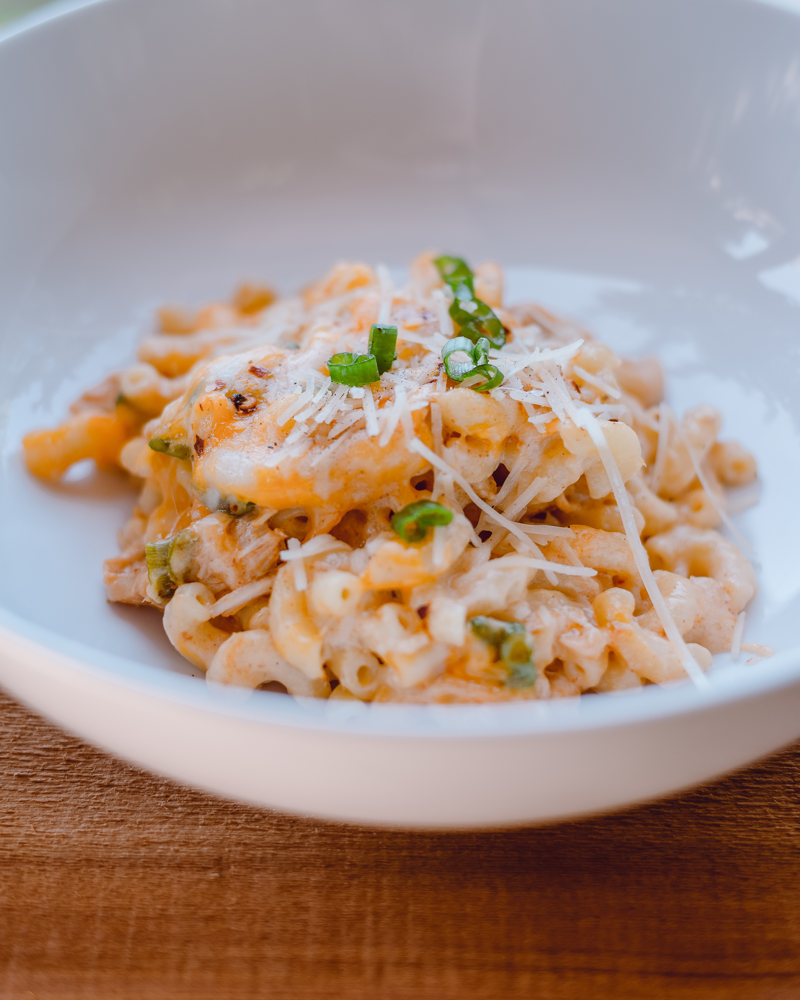

Macaroni & Cheese

Baked Macaroni and Cheese
Description:
Indulge in the ultimate comfort food with this mouthwatering baked macaroni and cheese recipe.
Creamy, cheesy, and satisfying, this dish is perfect for cozy dinners or potluck gatherings.
Follow our easy steps to create a homemade version that will have everyone asking for seconds.
Ingredients
-
8 ounces elbow macaroni or your preferred pasta shape
-
4 tablespoons butter
-
1/4 cup all-purpose flour
-
2 cups milk
-
2 cups shredded sharp cheddar cheese
-
1/2 cup shredded mozzarella cheese
-
1/2 teaspoon salt
-
1/4 teaspoon black pepper
-
1/4 teaspoon paprika (optional, for added flavor)
-
1/4 cup breadcrumbs (optional, for a crunchy topping)
Procedures
-
Preparing the Pasta:
-
Cook the macaroni in a large pot of salted boiling water according to
the package instructions until al dente.
-
Drain the pasta and set it aside.
-
Making the Cheese Sauce:
-
In a large saucepan, melt the butter over medium heat.
-
Stir in the flour and cook for 1-2 minutes until it forms a smooth paste (roux).
-
Gradually whisk in the milk, ensuring there are no lumps.
-
Continue cooking and stirring until the mixture thickens and comes to a gentle simmer.
-
Reduce the heat to low and add the shredded cheddar cheese and mozzarella cheese,
reserving a small amount of cheddar cheese for the topping.
-
Stir until the cheeses have melted and the sauce is smooth.
-
Season with salt, black pepper, and paprika, adjusting the amounts to suit your taste.
-
Combining the Pasta and Cheese Sauce:
-
Preheat your oven to 350°F (175°C).
-
Add the cooked macaroni to the cheese sauce, stirring until the pasta is well-coated.
-
Transfer the mixture to a greased baking dish or casserole dish.
-
Baking the Macaroni and Cheese:
-
Sprinkle the reserved shredded cheddar cheese evenly over the top of the macaroni and cheese.
-
If desired, sprinkle breadcrumbs over the cheese for a crunchy topping.
-
Bake in the preheated oven for 20-25 minutes or until the cheese is bubbly
and golden brown on top.
-
Serving:
-
Remove the baked macaroni and cheese from the oven and let it cool for a few minutes.
-
Serve it warm as a main course or as a delicious side dish.
-
Garnish with additional shredded cheese or chopped parsley, if desired.